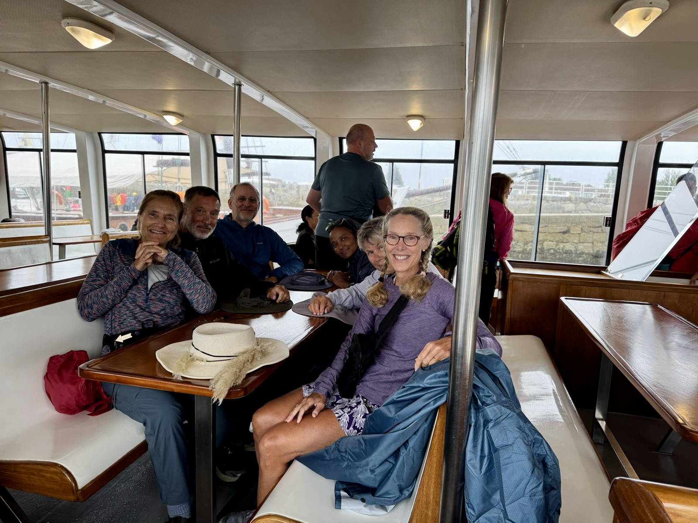
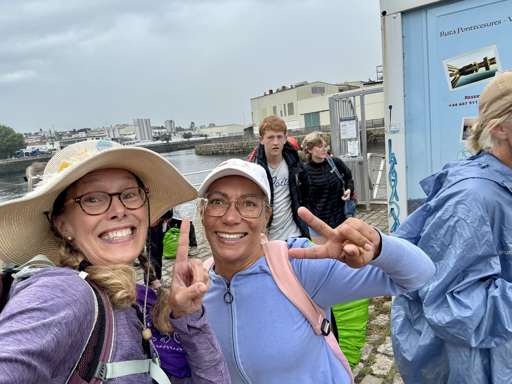
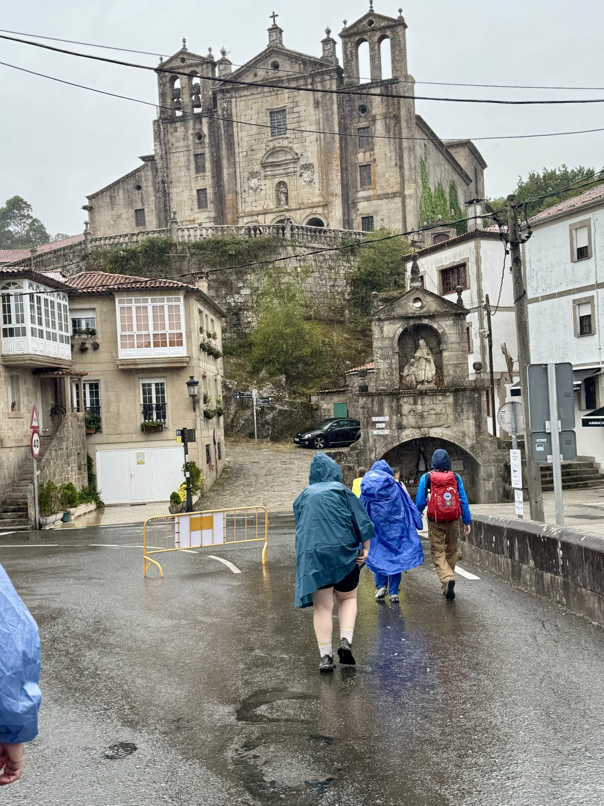
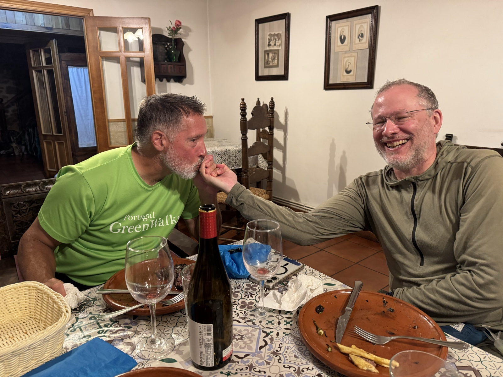

Stage 14: Vilanova de Arousa to Teo
Data: 12 miles, 1163 feet elevation gain, 4:15 moving time, 4:25 total time.
Hotel: Casa Do Cruceiro
Our marathon day began on a rainy Sunday in Vilanova de Arousa. We arrived two hours in advance of boarding time only to abandon our spot in line for shelter. The best of ideas…. the boat ride was 1.5 hours and was not terribly exciting. The best part for me was “seat dancing” to Abba tunes with our table and with the next row over—a young woman full of vigor who also appreciated Mama Mia showtimes. We took a selfie afterwards—we were kindred spirits.


After landing, our mighty pilgrim crew headed to the Cathedral for our religious variant credential for completing that Sargent of the Camino. Decked out in rain gear from head to toe—ponchos to cover our packs and bodies, we felt completely defeated because the office was closed! However, this was not the rule and we will consult the proper authorities to complete the process. We moved on hurriedly with 12 miles to complete before 7:30 pm in the rain. Always best to have airflow with snap sides in the rain as it can get terribly hot otherwise.

After 4.30 hours of pushing our athletic limits, we arrived at our hotel only to be told that dinner was served at 7 and, “No dinner for you!” After 12 miles of huffing it and a boat that was quite tardy, we were to have nothing with that outcome. Deb ever so nicely talked them into serving us.
